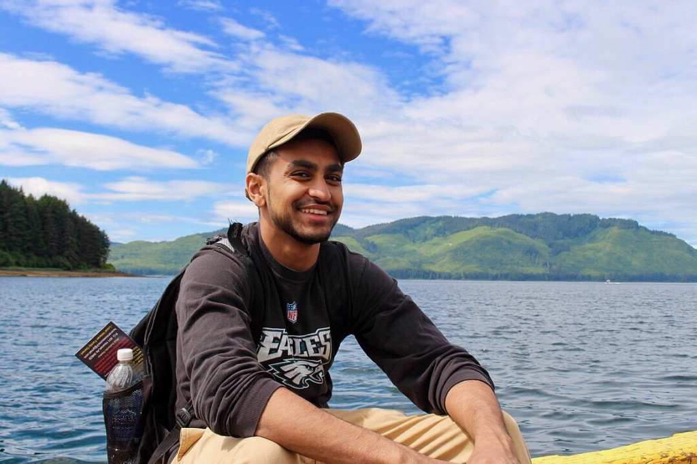

Aadit Patel
Software Developer
 Home
Home Portfolio
Portfolio  Contact
Contact Resume
ResumeAbout Me
Hello, my name is Aadit and I am a senior at the
University of Maryland College Park. I am currently studying
Computer Science with a minor in Statistics. If you had known me
before I came to college, you would have thought computer science
would be the last thing I would be doing. Over the few years I have spent studying the subject, I have gained a love for coding that I would have never thought possible and I hope to show that through current and future projects.
Other than coding, I am very passionate about music and sports. I have been taught myself guitar and piano and have been playing on and off for years. Music has been a stress relief to me and if i'm ever feeling overwhelmed by a project, I just grab my guitar or piano and play some tunes for a bit.
Portfolio
To view my Github, Click
HERE 
Contact Information
Name: Aadit Patel
Phone Number: 215-630-5313
Email : AaditPatel13@gmail.com
Location : College Park, Md